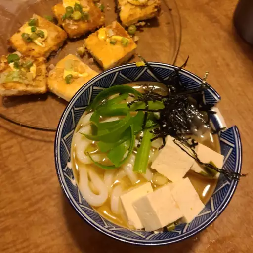

Miso Soup

Ingredients
- 4 cups water
- 2 tsp dashi granules
- 3 tbsp miso paste
- 1 (8 oz) package silken tofu, diced
- 2 green onions, sliced diagonally into 1/2 inch pieces
Steps
- Combine water and dashi granules in a medium saucepan over medium-high heat; bring to a boil. Reduce heat to medium and whisk in miso paste. Stir in tofu. Separate the layers of green onions, and add them to the soup. Simmer gently for 2 to 3 minutes before serving.